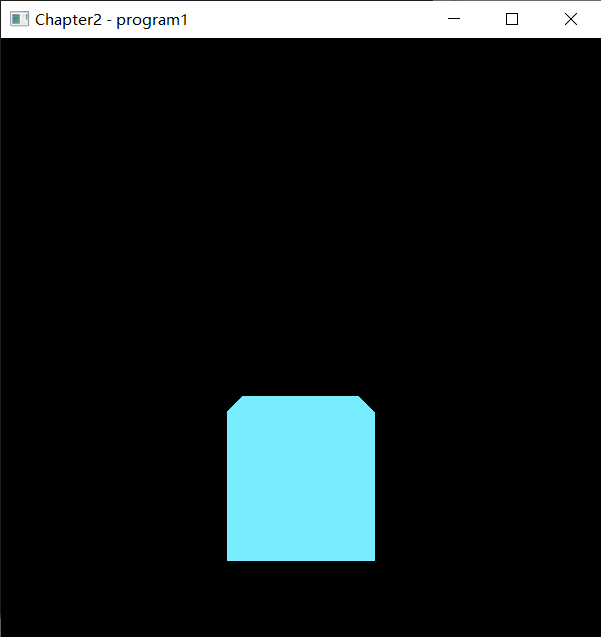

使用OpenGL渲染一个立方体
本文将介绍如何使用最为常用的图形 API —— OpenGL 来渲染一个立方体，代码部分来自于《Computer Graphics Programming in OpenGL with C++》，并加入了自己的理解。
基本过程
环境配置
在编写程序之前，需要先配置好一些有助于程序编写的第三方库，本次实验需要用到的库有三个：用于窗口管理的 GLFW 库，扩展功能的 GLEW 库，以及用于数学运算的 GLM 库。
IDE 使用的是 Visual Studio 2019，并安装了 GLSL Language Integration 插件来实现 glsl 语言的代码高亮和自动补全。
具体的环境配置过程在此不过多赘述，本文主要聚焦于代码的实现。
窗口的创建
要将渲染的图像显示出来，就需要创建一个特定的显示窗口，首先通过 glfwWindowHint() 指定 OpenGL 的版本号，再使用 glfwCreateWindow() 创建 GLFW 窗口。由于创建 GLFW 窗口并不会自动将它与当前 OpenGL 上下文关联起来，因此还需要调用 glfwMakeContextCurrent().
为了防止画面撕裂的发生，我们通常需要使用 glfwSwapInterval() 来开启垂直同步（Vsync）。
同时，在图形渲染的循环语句中，还需要加入 glfwSwapBuffers() 来绘制屏幕，加入 glfwPollEvents() 来处理窗口相关事件，包括最小化、关闭、拉伸等操作。
程序初始化
创建 Shader 对象
首先使用 glCreateShader（） 创建一个 Shader 对象，并通过枚举类型 shaderType 指定 Shader 类型（GL_VERTEX_SHADER 或者 GL_FRAGMENT_SHADER），再使用 glShaderSource（）;，利用 string 来替换 shader 对象的源代码，此处的 string 可以直接硬编码于 C++ 程序中，但在代码量较多时硬编码显然不合适，应该将其编码于一个专门的 glsl 文件中，并使用 C++ 的文件输入流 ifstream进行读取操作。
编译 Shader 对象
在得到了包含源代码的 Shader 对象后，就需要将其编译了，编译使用 glCompileShader（）. 由于 Shader 是运行在 GPU 上的代码，因此当编译出错时 C++ 程序也不会崩溃，只是无法正常输出，因此这里我们可以使用 glGetShaderiv（） 获取 shader 的编译状态(GL_COMPILE_STATUS)，若编译出错则输出错误信息。
创建并链接 program 对象
最后创建 program 对象，使用 glCreateProgram（） . 并使用 glAttachShader（）, 将之前创建的 Shader 对象附加到 program 上，使用 glLinkProgram（） 链接 program 对象，链接过程同样可能失败，因此可通过 glGetProgramiv（） 获取链接状态。
创建并激活 VAO 与 VBO
VBO 是顶点缓冲对象（Vertex Buffer Object），里面存储了一系列图形数据，包括顶点坐标等，一个场景通常需要多个 VBO. 而 VAO 是顶点数组对象（Vertex Array Object），它是一种组织缓冲区的方法，在此项目中只需要一个。
VBO 使用 glGenBuffers() 创建，使用 glBindBuffers() 激活；VAO 使用 glGenVertexArrays() 创建，使用 glBindVertexArrays() 激活。一个立方体包含 36 个顶点（一个立方体由 12 个三角形组成），这里直接由数组给出，并使用 glBufferData() 将顶点坐标传递给缓冲区。
渲染过程
渲染过程在程序开始后将会不断执行，每一次执行都将刷新当前显示的内容，调用渲染过程的频率也就是帧数。
启用 program 对象
首先需要先使用 glClear() 清除深度缓冲区，否则在进行隐藏面消除时可能会使得每个曲面都被移除从而导致黑屏，再调用 glUseProgram() 来启用 program 对象。
构建矩阵
要将一个三维物体准确地渲染到屏幕，通常需要使用透视矩阵、模型矩阵、视图矩阵对坐标点进行变换。
首先是透视矩阵（proj_matrix），GLM 库中包含了一个用于构建透视矩阵的函数 glm::perspective()，参数需要纵横比、视场（FOV）、近剪裁平面的距离、远剪裁平面的距离。需要注意的是，此处的 FOV 单位是弧度。
其次是模型矩阵和视图矩阵，通常我们将这两个矩阵合并成为模型-视图矩阵（mv_matrix）。模型矩阵为一个平移 (cubeLocX, cubeLocY, cubeLocZ) 的平移矩阵，视图矩阵为一个平移 (-cameraX, -cameraY, -cameraZ) 的平移矩阵，都可以使用 glm::translate() 构造。
将矩阵复制给统一变量
统一变量在 Shader 代码中使用 uniform 关键字声明，是一系列顶点的一个统一的属性。
首先使用 glGetUniformLocation() 获取 Shader 中统一变量的引用，再使用 glUniformMatrix4fv() 将上一步构建的矩阵复制给统一变量。
Shader 在获取到变换矩阵之后，便计算得到渲染时每个点的实际位置，这个变量在 OpenGL 中已经预先定义，名为 gl_Position，可得 gl_Position = proj_matrix * mv_matrix * vec4(position, 1.0)，此处的 postion 为立方体预期的顶点坐标，在下一步中将会传入。
将 VBO 关联给顶点属性
首先激活特定的 VBO，再使用 glVertexAttribPointer() 将 VBO 中的数据传送给每一个顶点的顶点着色器的特定变量，这个变量根据 layout (location = n) 来指定 n 号位置。
同时，这里还需要使用 glEnableVertexAttribArray() 来启用此 n 号位置的变量。
顶点属性插值
顶点着色器输出的变换过后的顶点坐标 gl_Position 到达光栅着色器并光栅化之后，片段的具体像素位置到达片段着色器，并使用片段着色器中输出的颜色属性进行着色。
绘制模型
最终，使用 glDrawArrays() 绘制模型，图元类型选择三角形（GL_TRIANGLES）.
效果展示

源代码
main.cpp
1 |
|
Utils.h
1 |
|
Utils.cpp
1 |
|
fragShader.glsl
1 |
|
vertShader.glsl
1 |
|
 微信
微信 支付宝
支付宝